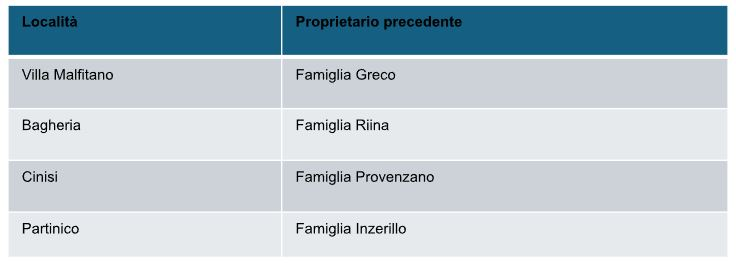

|
|

|
Breve introduzione storica della città di Palermo
Palermo, sinonimo di storia e cultura, ha intrapreso un viaggio trasformativo uscendo dalle ombre
della mafia per abbracciare un futuro più luminoso.
La mafia, nota anche come Cosa Nostra, ha radici profonde a Palermo. Originariamente fondata
come organizzazione segreta, è nota per il suo coinvolgimento in crimini e corruzione. La sua
influenza si estendeva dalla politica locale all'economia. Tuttavia, la storia di Palermo non è solo
definita dalla mafia, ma anche dalla resilienza e dal coraggio dei suoi cittadini.
Gli anni '80 e '90 sono stati periodi critici nella lotta contro la mafia. Durante questo periodo noto come "anni di piombo", giudici, politici e cittadini sono stati uccisi.
Queste sono le principali località sequestrate alla mafia:

Iniziative e progetti
Negli ultimi anni ci sono state molte iniziative e progetti per utilizzare e sfruttare al meglio queste risorse.
In un locale commerciale nel quartiere Malaspina di Palermo, confiscato alla famiglia Buscemi, sarà realizzato il progetto “Sartoria Sociale: ricucire il territorio” (promosso dalla cooperativa sociale Al Revés, contributo: 410 mila euro) che permetterà di rafforzare le attività del laboratorio sartoriale, attraverso nuovi posti di lavoro, l’avvio della vendita online, il posizionamento della sartoria sociale all’interno di una rete di imprese per la promozione di un ‘distretto fashion’. Sono inoltre previste attività di sensibilizzazione nelle scuole e la collaborazione con l’Accademia delle Belle Arti, per una produzione critica e socialmente responsabile.
Ad Altavilla Milicia (Pa) verrà realizzato il progetto “Cambio Rotta: la meglio gioventù” (promosso dal Consorzio Ulisse, contributo: 370 mila euro). In una villa confiscata ad un imprenditore affiliato a cosa nostra sorge oggi un centro culturale, le cui attività saranno potenziate grazie all’iniziativa: attività culturali, di educazione ambientale e di animazione per bambini arricchiranno l’offerta già esistente (lounge bar, ristorante e scuola di cucina), a cui si è dato vita grazie al precedente bando della Fondazione CON IL SUD per la valorizzazione e il riutilizzo in chiave sociale dei beni confiscati.
Il progetto “AVIBIOAGRO” (promosso dalla cooperativa sociale Solidarietà, Sviluppo e Legalità, contributo: 470 mila euro) avvierà a Monreale (Pa) – in un’azienda agricola già esistente in un bene confiscato al boss Bernardo Bommarito – l’allevamento di polli in regime biologico e la produzione del foraggio necessario per la loro alimentazione. Sono previsti incontri di animazione territoriale con le scuole, laboratori sulla legalità, l’alimentazione e le specificità delle zone rurali dell’entroterra palermitano. Inoltre, il progetto favorirà l’inserimento lavorativo di alcune persone in condizione di disagio e il coinvolgimento di 30 famiglie di persone con autismo, attraverso attività di pet therapy, laboratori di manipolazione e stimolazione
Progetti base validi per tutti i terreni confiscati in Sicilia e non solo:
Progetto A: Ristrutturazione di edifici confiscati
Obiettivo: Ristrutturare gli edifici confiscati per creare spazi abitativi accessibili e sicuri per i cittadini.
Impatto potenziale: Offrire alloggi a prezzi accessibili per le famiglie bisognose e contribuire alla riduzione del problema dell'edilizia abusiva.
Progetto B: Creazione di parchi pubblici
Obiettivo: Trasformare i terreni confiscati in parchi pubblici per migliorare la qualità della vita dei residenti.
Impatto potenziale: Offrire spazi verdi accessibili a tutti, promuovere la socializzazione e migliorare l'ambiente urbano.

Progetto C: Sviluppo di centri culturali
Obiettivo: Riqualificare gli immobili confiscati per creare centri culturali dedicati all'arte, alla musica e alla formazione.
Impatto potenziale: Promuovere la cultura e l'educazione, offrire opportunità di sviluppo personale e contribuire alla rinascita della comunità locale.

Infine, abbiamo provato a trarre delle conclusioni positive da questo fenomeno riunendo le leve su cui la città di Palermo potrebbe far forza per incrementare il proprio sviluppo:
Riqualificazione urbana
La confisca delle terre ha permesso la riqualificazione urbana di Palermo, trasformando aree precedentemente controllate dalla mafia in spazi pubblici accessibili a tutti.
Crescita economica
La confisca delle terre ha stimolato la crescita economica di Palermo, creando nuove opportunità di lavoro e investimenti nella regione.
Rafforzamento comunitario
La confisca delle terre ha contribuito al rafforzamento delle comunità locali, promuovendo la partecipazione civica e l'inclusione sociale.
Turismo e cultura
La confisca delle terre ha favorito lo sviluppo del turismo e della cultura a Palermo, attrarre visitatori e promuovere l'identità culturale della città.